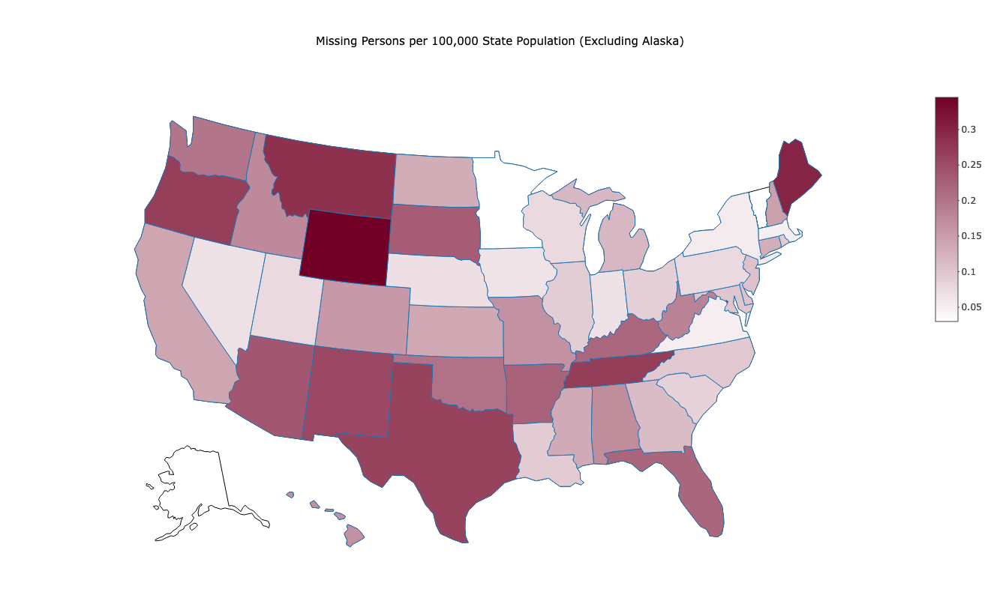
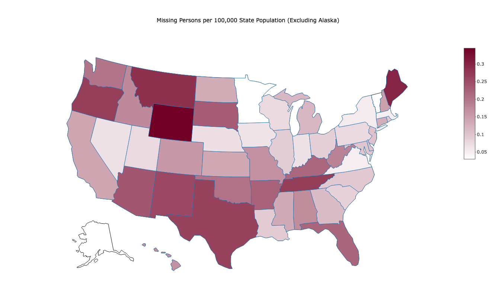

The donut chart represents the proportion of missing persons in the dataset based on their biological sex. We see that males make up the majority, accounting for 64.2%, while females constitute 35.8% of the total missing persons.
The stacked bar chart shows missing persons across different states categorized by biological sex. Each bar on the chart represents a state, with the height of the bar indicating the total count of missing persons. The bars are divided into male and female, showing the distribution of missing persons by sex within each state. We see that California has the highest total count of missing persons and the highest counts of male and female of any state.
This map shows the state-wise distribution of missing persons, with darker colors representing higher counts of missing individuals. California and Texas show as the darkest shades on the map, indicating that these states have the highest numbers of missing persons based on our dataset from NamUS. It could also prompt further investigation into the underlying factors contributing to the higher prevalence of missing persons in these specific areas, such as population density, social dynamics, or law enforcement resources.
The scattergeo map provides a visual representation of missing persons counts at both the city and state levels. The dense concentration of dots along the northeast coast, particularly in states like New York, New Jersey, and Pennsylvania, suggests a higher prevalence of missing persons cases in this region. Additionally, scattered dots along the west coast, notably in California, indicate another area with a high number of missing persons. The geographical distribution of these dots may reflect various factors such as population density, urbanization, and socio-economic conditions, all of which can influence the occurrence and reporting of missing persons. This visualization is valuable for identifying geographic patterns and hotspots.
The choropleth map of missing persons per 100,000 state population shows that Alaska is significantly darker compared to other states, indicating a higher proportion of missing persons relative to its population. This intensified color suggests that Alaska faces a pronounced challenge with missing persons cases compared to the rest of the United States. The choropleth map excluding Alaska shows Wyoming and Maine as the darkest colors, indicating a higher proportion of missing persons relative to its population.
This graph shows the trends in average violent crime rates in the United States from 1960 to 2018. The red line charts the overall trend, displaying fluctuations in the annual average rates of violent crime per 100,000 population.
The choropleth represents the variation in average violent crime rates across different U.S. states. Each state is color-coded based on its respective average violent crime rate per 100,000 population, with darker shades indicating higher crime rates. Alaska and New Mexico appear as the darkest shades showing that these states have higher average violent crime rates compared to others. The second map excludes Alaska when showing the distribution. The ratio is calculated by multiplying the average violent crime rate by the proportion of missing persons per 100,000 population. Darker shades on the map signify higher ratios, with New Mexico and Tennessee standing out as the states with the highest values. This indicates a higher intersection of elevated violent crime rates and a notable proportion of missing persons in these areas.
This graph visualizes the average rate of violent crime and the proportion of missing persons in each U.S. state. The ratio is calculated by multiplying the average violent crime rate by the proportion of missing persons per 100,000 population to understand the prevalence of violent crime and the incidence of missing persons relative to the population size. Alaska stands out as the state with the highest ratio meaning that there is a potential correlation between elevated violent crime rates and a significant proportion of missing persons in the state.
This scatter plot visualizes the relationship between the average violent crime rates and the proportion of missing persons per 100,000 population across states. Each point on the plot represents a state, with the x-axis indicating the average violent crime rate, and the y-axis representing the proportion of missing persons. The majority of states cluster around a proportion of approximately 0.2 missing persons per 100,000 population. However, Alaska is the outlier at 1.74 missing persons per 100,000 a high average violent crime rate and a substantial proportion of missing persons relative to its population.
This choropleth map shows the variation in average AMIYR scores across states. The map indicates that Idaho, Utah, West Virginia, and Oregon have the highest average AMIYR scores so have higher levels of reported cases or prevalence of any mental illness per 100,000 population.
The average AMIYR (Any Mental Illness Yearly Rate) is multiplied by the proportion of missing persons in the state's population and visualized on this choropleth map. The first map shows that Alaska has the highest ratio at around 35 compared to other states. This implies that Alaska has a higher correlation between the average mental health illness rate and the proportion of missing persons in its population. In the map excluding Alaska, we see Wyoming, Oregon, and Maine as the states with the highest ratios.
The scatter plot visualizes the relationship between the average Any Mental Illness (AMI) score for individuals aged 18 or older and the proportion of missing persons in each state's population. Each point represents a state, with the x-axis indicating the average AMI score and the y-axis showing the missing persons per 100,000 population. Alaska is an outlier with the highest average AMI score and a relatively high proportion of missing persons, suggesting a correlation between the prevalence of mental illness and the incidence of missing persons in Alaska.
The choropleth map shows the prevalence of illicit drug use across the United States. Each state is color-coded based on its average ILLOM score. Vermont stands out as the state with the highest ILLOM score.
The two choropleth maps show the correlation between illicit drug use and the proportion of missing persons in each state. In the first map, Alaska is seen with the highest ratio showing an association between illicit drug use and the incidence of missing persons in the state. However, in the second map excluding Alaska, Oregon has the highest ratio, showing a correlation between illicit drug use and the number of missing persons in this state as well.
This graph visually represents the relationship between the average illicit drug use (ILLOM) scores and the proportion of missing persons in the population for each U.S. state. Each point on the plot corresponds to a state, with the x-axis displaying the average ILLOM score, a measure of illicit drug use, and the y-axis showing the proportion of missing persons per 100,000 population. Alaska is the highest point on the graph, indicating that it has both a relatively high average illicit drug use score and a high proportion of missing persons.
 
